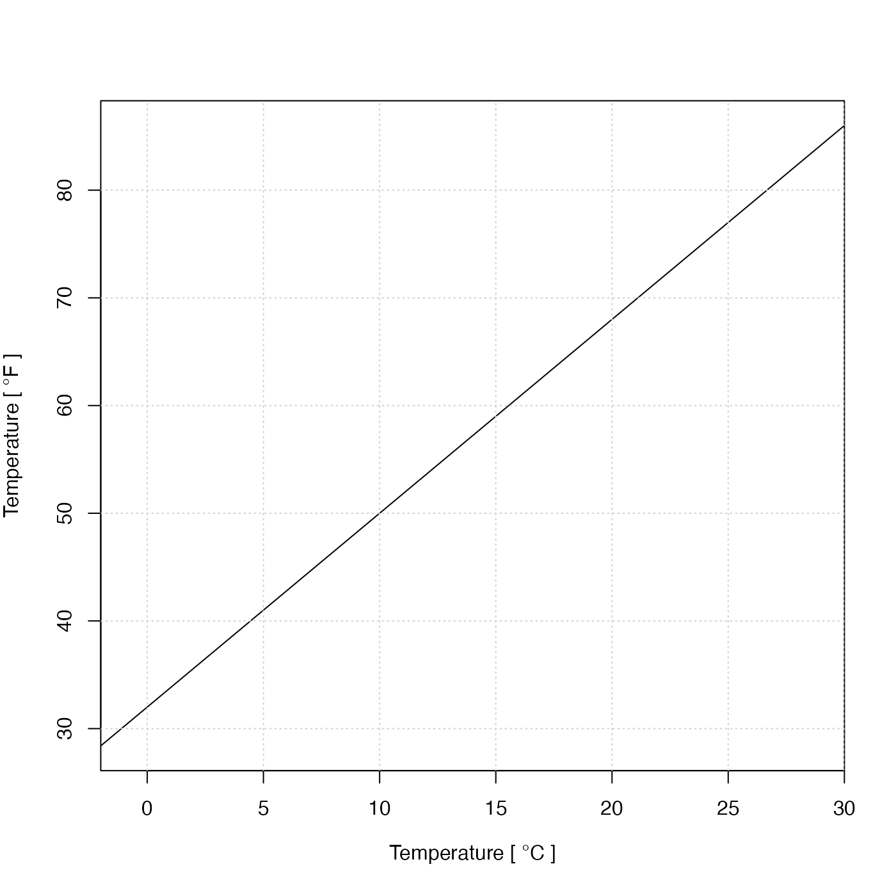

Provide axis names in adjustable sizes, e.g. using T instead of Temperature if the latter would be unlikely to fit on an axis. The name will also include units as appropriate. This function is intended mainly for use within the package, and users should not rely on its behaviour being unchangeable.
Usage
resizableLabel(
item,
axis = "x",
sep,
unit = NULL,
debug = getOption("oceDebug")
)Arguments
- item
code for the label. If this matches or partially matches to a known value (see “Details”), then that value and associated unit are returned. If not,
itemis returned, unaltered. See “Details” for a list of known values, and a note on partial matching.- axis
a string indicating which axis to use; must be
xory.- sep
optional character string inserted between the unit and the parentheses or brackets that enclose it. If not provided, getOption
("oceUnitSep", " ")is called to get a value forsep. By default, the units are enclosed in square brackets; to change that to parentheses, use options(oceUnitBracket="("), but note that this setting will last for the whole session.- unit
optional unit to use. If not supplied, a sensible unit is used, depending on
item. And, even if supplied,unitis ignored for manyitemvalues for which it make no sense, e.g."oxygen ml/l","Conductivity Ratio"and"Absolute Salinity". Only the oce developers should consider supplying a value forunit.- debug
optional debugging flag. Setting to 0 turns off debugging, while setting to 1 causes some debugging information to be printed.
Value
A character string or expression, in either a long or a shorter
format, for use in the indicated axis at the present plot size. Whether the
unit is enclosed in parentheses or square brackets is determined by the
value of getOption("oceUnitBracket"), which may be "[", which is
the default, or "(". Whether spaces are used between the unit and
these delimiters is controlled by sep or getOption("oceUnitSep").
Details
Partial matches to the item value are handled by calling pmatch(). This
can be convenient, with item="tem" and item="temperature" having the same
effect. However, it can also be confusing for labels that are similar.
For example, there are 5 variants of oxygen concentration.
It is best to unabbreviated values, especially in non-interactive work.
The list of known values is:
"absolute salinity", "along-spine distance km", "along-track distance km",
"C", "conductivity mS/cm", "conductivity S/m", "conservative temperature",
"CT", "depth", "direction", "distance", "distance km", "eastward",
"elevation", "fluorescence", "frequency cph", "heading", "latitude",
"longitude", "N", "N2", "nitrate", "nitrite", "northward", "oxygen",
"oxygen mL/L", "oxygen saturation", "oxygen umol/kg", "oxygen umol/L",
"p", "phosphate", "pitch", "roll", "S", "SA",
"sigma0", "sigma1", "sigma2", "sigma3", "sigma4",
"sigmaTheta",
"silicate", "sound speed", "spectral density m2/cph", "speed",
"spice", "spiciness0", "spiciness1", "spiciness2",
"T", "theta", "tritium", "u", "v", "w", and "z".
See also
Other functions that create labels:
labelWithUnit()
Examples
# 1. A matchable item name
resizableLabel("temp")
#> "Temperature" * " [ " * degree * "C" * " ]"
# 2. Not a matchable item name
resizableLabel("tempJUNK")
#> [1] "tempJUNK"
# 3. A silly example, since ylab=expression(...) is shorter.
degC <- c(-2, 30)
degF <- 9 / 5 * degC + 32
plot(degC, degF,
xlab = resizableLabel("temp"),
ylab = resizableLabel("temp", unit = expression(degree * "F")),
xaxs = "i", type = "l"
)
grid()
